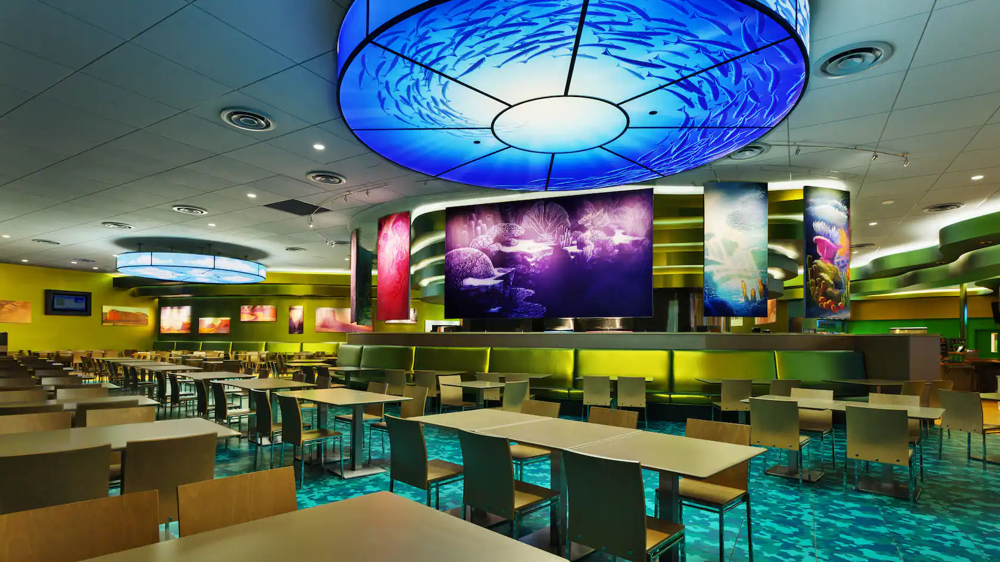
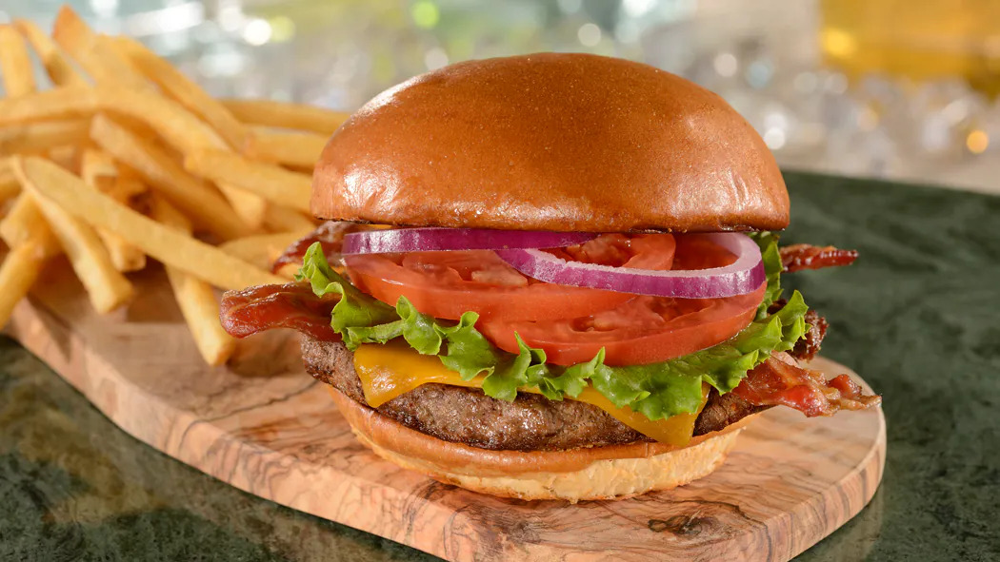

Restaurantes
Em quase todos os Resorts, existem restaurantes que remete a temática dos mesmos, porém também podem ser encontrados diversos serviços de entrega de comida direto para seu quarto no Resort.
Landscape Flavors
Landscape Flavors é um restaurante localizado dentro do Disney's Art of Animation Resort, que possuí 4 setores de almoço ou janta, com a temática dos mesmos filmes do resort, sendo O Rei Leão, Carros, Procurando Nemo e Pequena Sereia! Seus príncipais pratos são inspirados nos favoritos norte-americanos, incluido pizzas, saladas, hambúrgueres e diversas bebidas características.
Horários
Seu horário de funcionamento é das 7h00 até as 23h00.
Preço
Para almoço e jantar, o restaurante oferece refeições a partir de R$75,69 por adulto. E para café da manhã, o restaurante também oferece refeições a partir de R$75,69 por adulto.